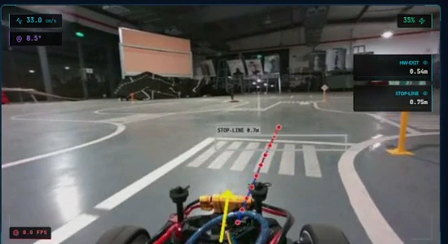

01
Oct 2024 – May 2026
Autonomous Driving · Embedded C++20 & TensorRT
★ 1st Nationally (2026)
★ Global Top 9 (2025, Best in Asia)
150M VND Bosch Grant
Bosch Future Mobility Challenge (BFMC 2025 & 2026)
1:10-scale autonomous driving stack on NVIDIA Jetson Orin Nano uniting zero-copy C++20/Python IPC, 21.8 ms TensorRT multi-task perception, Joseph-form EKF localization, and a 23-state behavior FSM.
01
→
Sensing & Zero-Copy IPC
Streams RGB-D frames and 100 Hz IMU telemetry via lock-free POSIX shared memory and C++20 worker threads.
02
→
NeuroPilot & EKF Fusion
Joint 13-class detection, FiLM-routed cubic Bézier waypoints (FDAT loss, -41% error), and Joseph-form EKF pose.
03
23-State FSM & Actuation
Orchestrates 9 urban maneuvers with Clothoid G1 smoothing, PD-Pure Pursuit steering, and STM32 watchdog safety.

Click to expand (HD)